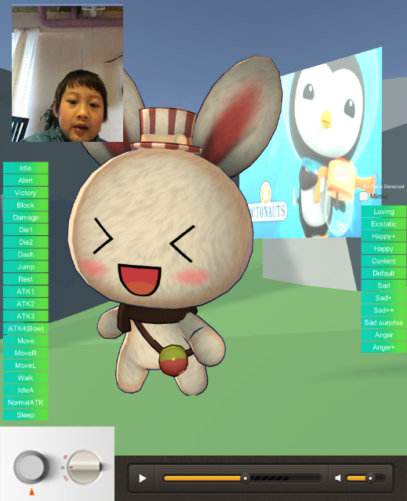
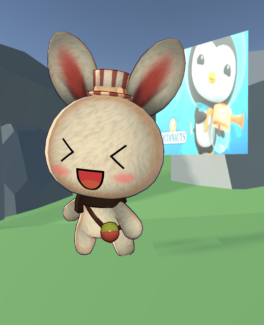

kindyU
A virtual world where parent and child can play together and foster good habits, specially designed with insights from developmental psychology.
Attention and focus rewarded.
kindyU turns the swipe-inducing design norms of Apps upside down - rather than encouraging kids to keep on looking for more, kindyU rewards sustained attention. For example, after making a choice, a child is rewarded for watching a video to the end.Manage screentime with your child.
‘Screen time’ is one of the biggest and most complicated concerns parents report. And for good reason - technology companies are experts in holding our attention. kindyU takes some of the same ‘tricks’ for habit formation and hands them to you. More importantly, kindyU is designed to help you nurture good habits in your child from the earliest moments.Cute and emotionally intelligent virtual friend.
kindyU’s cute cartoon characters can express a wide range of emotions, and also ‘see’ these in your child. Using the selfie-camera on the tablet or smartphone, kindyU ‘toons can make a pretty good guess of how the child feels and relate accordingly. As with all youngsters, this is something that gets better with time.Make-believe in an amazing new world.
You know how kids love to make friends with cuddly toys, and you can ‘communicate’ in special ways using puppets? kindyU2 let’s you do this using touchscreen devices, in a virtual shared world, anywhere anytime. It’s like Skype and 2-player minecraft rolled into one and designed to nurture relationships and flourishing development.Video content tailored for and by you.
We all know how much amazing video content there is out there, and how good this can be for our kids development. But, how do we find the good stuff? How do we avoid the bad stuff? With Ivi curation you can hand-pick video libraries that your child can choose from, access our expert curated channels and playlists, and find just the thing that fits your child right now.Edutainment made to measure, and measured for success.
Each of us learns differently, and young children progress very rapidly with ever-shifting needs and abilities. Kids flourish when challenges match their abilities. The kindyUniverse is full of little games that are fun and designed to understand individual development and keep things interesting. Watching videos in kindyU is interactive, and this boosts learning!

